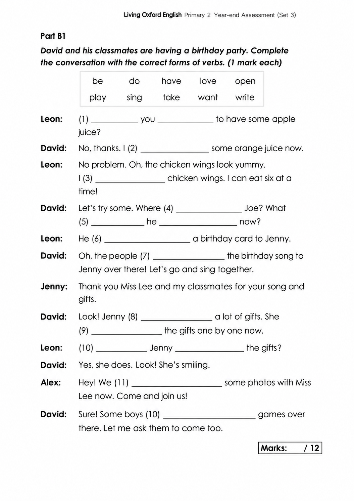
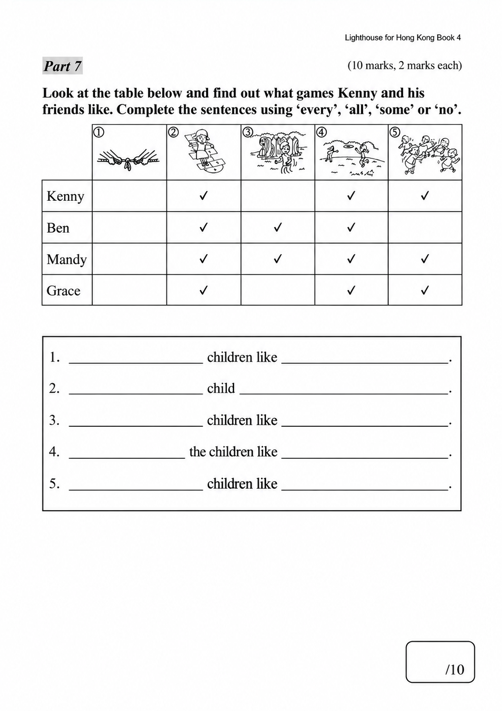
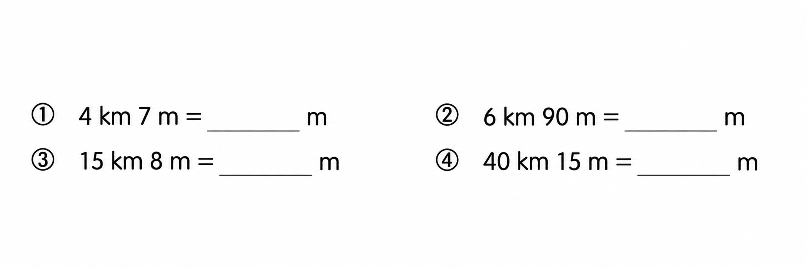

已掌握
| # | 中文意思 | 例句/提示 | 英文默写 | 已掌握 |
|---|---|---|---|---|
| noun 名词 | ||||
| 1 | 网站 | The school has news. | ||
| 2 | 邮票 | I put a on the postcard. | ||
| 3 | 银行 | My mum goes to the . | ||
| 4 | 宠物 | My is a hamster. | ||
| 5 | 曲奇饼 | Mum baked some . | ||
| 6 | 声音 | I heard a strange outside. | ||
| verb 动词 | ||||
| 7 | 抓住 | Try to the ball. | ||
| 8 | 付款 | I for the book. | ||
| preposition 介词 | ||||
| 9 | 在……之上 | The clock is the board. | ||
| phrase 短语 | ||||
| 10 | 小学 | My sister goes to . | ||
| 11 | 晾衣服 | We on the washing line. | ||
| 12 | 邮局 | I sent the parcel from the . | ||
| 13 | 校车 | We take the every morning. | ||
| noun phrase 名词短语 | ||||
| 14 | 游泳池 | I swim in the . | ||
| adjective 形容词 | ||||
| 15 | 硬的；困难的 | This question is . | ||
| 16 | 聪明的 | She is and kind. | ||
| uncategorized 未分类 | ||||
| 17 | 见面 | Let's at the school gate. | ||
| 18 | 很好的 | We watched an magic show. | ||
| 19 | 找到 | I cannot my pencil. | ||
| 20 | 铁路 | The connects the two towns. | ||
| # | 单词/词组 | 中文意思 | 例句/说明 | 已掌握 |
|---|---|---|---|---|
| adjective 形容词 | ||||
| 1 | surprised | My parents were surprised. | ||
| 2 | honest | She is honest. She does not tell lies. | ||
| 3 | ugly | I was hairless, toothless and ugly. | ||
| noun 名词 | ||||
| 4 | webpage | This webpage has many pictures. | ||
| 5 | cage | The bird is in a cage. | ||
| 6 | photograph | This photograph is beautiful. | ||
| 7 | hamster | The hamster sleeps in its cage. | ||
| 8 | interviewer | The interviewer asks questions. | ||
| 9 | dust | There is dust on the shelf. | ||
| 10 | elf（复数：elves） | The elf has pointed ears. | ||
| 11 | choir | My sister sings in the school choir. | ||
| 12 | cheese | The mouse likes cheese. | ||
| 13 | venue | The venue is near our school. | ||
| 14 | musician | The musician plays music. | ||
| 15 | farming | Farming provides us with food. | ||
| 16 | farm | Ben wants to go to the farm. | ||
| 17 | cycling | I like cycling at weekends. | ||
| 18 | cola | I'd like three cans of cola, please. | ||
| 19 | lettuce | Is there any lettuce in the fridge? | ||
| 20 | hotel | We stayed at a hotel. | ||
| noun phrase 名词短语 | ||||
| 21 | a packet of French fries | I'd like a packet of French fries. | ||
| 22 | lemon tea | I'd like two cups of lemon tea, please. | ||
| verb 动词 | ||||
| 23 | wrap | Please wrap the present in paper. | ||
| 24 | weigh | We weigh the bag. | ||
| phrase 短语 | ||||
| 25 | look after | I look after my little sister. | ||
| verb phrase 动词短语 | ||||
| 26 | doing puzzles | I like doing puzzles. | ||
| 27 | sing 'Happy Birthday' | We sing 'Happy Birthday' to her. | ||
| uncategorized 未分类 | ||||
| 28 | trick | Here is a trick to help you remember the word. | ||
| 29 | concert | We went to a concert last night. | ||
| 30 | cartoon | We watched a funny cartoon. | ||
| # | 中文意思 | 例句/提示 | 英文默写 | 已掌握 |
|---|---|---|---|---|
| time/date 时间日期 | ||||
| 1 | 十二月 | is the twelfth month. | ||
| 2 | 星期三 | is a weekday. | ||
| time unit 时间单位 | ||||
| 3 | 周 | A has 7 days. | ||
| directions 方向 | ||||
| 4 | 南 | is a direction. | ||
| numbers 数字 | ||||
| 5 | 5 | is 5. | ||
| 6 | 17 | is 17. | ||
| 7 | 30 | is 30. | ||
| 8 | 60 | is 60. | ||
| 9 | 90 | is 90. | ||
| 10 | 千 | One is 1000. | ||
| solid shape 立体图形 | ||||
| 11 | 三棱锥 | A has triangular faces. | ||
| 12 | 圆柱 | A has two circular faces. | ||
| 13 | 曲面 | A cylinder has a . | ||
| plane shape 平面图形 | ||||
| 14 | 四边形 | A has four sides. | ||
| geometry 几何 | ||||
| 15 | 钝角 | An is greater than 90 degrees and less than 180 degrees. | ||
| # | 单词/词组 | 中文意思 | 例句/说明 | 已掌握 |
|---|---|---|---|---|
| operations 运算 | ||||
| 1 | addition | Addition means putting numbers together. | ||
| 2 | be left | How many apples will be left? | ||
| question word 题目词 | ||||
| 3 | calculate | Calculate the answer. | ||
| 4 | respectively | Tom and Ben have 2 and 3 books respectively. | ||
| place value 位值 | ||||
| 5 | tens | The digit is in the tens place. | ||
| comparison 比较 | ||||
| 6 | fewer | There are fewer apples in this box. | ||
| 7 | fewest | Which group has the fewest? | ||
| 8 | shortest | Find the shortest line. | ||
| 9 | lighter | A pencil is lighter than a brick. | ||
| 10 | lightest | The 1 kg bag is the lightest of the 1 kg, 2 kg and 3 kg bags. | ||
| time/date 时间日期 | ||||
| 11 | small division | The minute hand moves one small division in one minute. | ||
| position 位置 | ||||
| 12 | front | The door is at the front of the room. | ||
| operations calculation 运算 | ||||
| 13 | difference | The difference is the answer in subtraction. | ||
| 14 | multiplication | Multiplication can use times. | ||
| 15 | subtract A from B | "Subtract A from B" means B - A. | ||
| 16 | expression | Write the expression in horizontal form. | ||
| 17 | equally | Share the apples equally. | ||
| 18 | dividend | The dividend is divided by the divisor. | ||
| 19 | divisor | The divisor divides the dividend. | ||
| 20 | horizontal form | Write it in horizontal form. | ||
| 21 | divide A by B | Divide A by B. | ||
| currency money 货币 | ||||
| 22 | exchange | We exchange money at the counter. | ||
| 23 | pay for | I pay for the book. | ||
| 24 | change | Count the change after paying. | ||
| measurement 测量 | ||||
| 25 | height | Measure the height of the box. | ||
| 26 | gram | One gram is one thousandth of a kilogram. | ||
| data charts 统计图 | ||||
| 27 | block chart | Read the block chart. | ||
| geometry tool 几何工具 | ||||
| 28 | set square | A set square helps us draw angles. | ||
| 句型结构 | ||||
| 29 | ... is to the south of ... | The library is to the south of the shop. | ||
| plane shape 平面图形 | ||||
| 30 | isosceles trapezium | An isosceles trapezium has two equal legs. | ||


![The map below shows the routes from Alex’s home to the campsite. (a) The route between the campsite and the ____ is the shortest. This route is ____ km long. (b) The shortest route from Alex’s home to the campsite is ____ km long. The shop(s) that he goes past in this route include(s): ____. (c) The instructor needs to go from the campsite to the supermarket and the accessory store to buy something, and then go back to the campsite. He has to travel at least ____ km, and his route is: Campsite → ____ → Campsite.](assets/question_sets/math_grade3_mistakes_2026-09-22_clean/image5.png)
